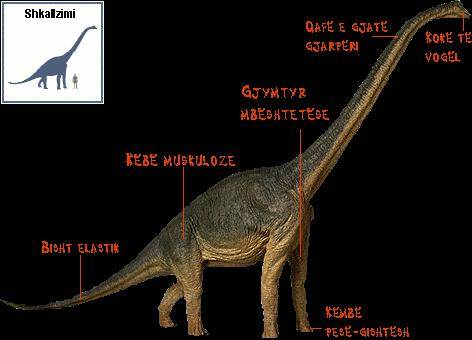

Hompejgji i Arbërit
Bar-ngrënësit
DINOARBI
Njohuri për dinosaurët
Disa nga shtazët më të mëdha ndonjëherë që kanë jetuar në Tokë kanë qenë Dinosauret. Dinosauret bar-ngrënës vareshin nga madhësia e tyre e madhe, ose nga prazmoreja e trupit të tyre, për mbrojtjen kundër grabitqareve. Ata shpenzonin shumicën e ditës duke kullotur.

-
Emri: BRACHIOSAURUS Shqiptimi: (brak-ee-oh-sore-us) Lloji i kafshës: Dinosaur Lloji i ushqimit që han: Bimë-ngrënës I gjatë: Më i gjatë se 25 metre (82ft) Pesha: Më shumë se 75 tonë Karakteristika:Qafa e gjatë e tij i mundesonte atij për ta mbrrir vegjetacionin i cili ishte shumë lart për dinosauret tjerë.
Prodhuar më;
1 janar 2003
Kontakto me mua në e-mailin tim:
kapreboys6@hotmail.com